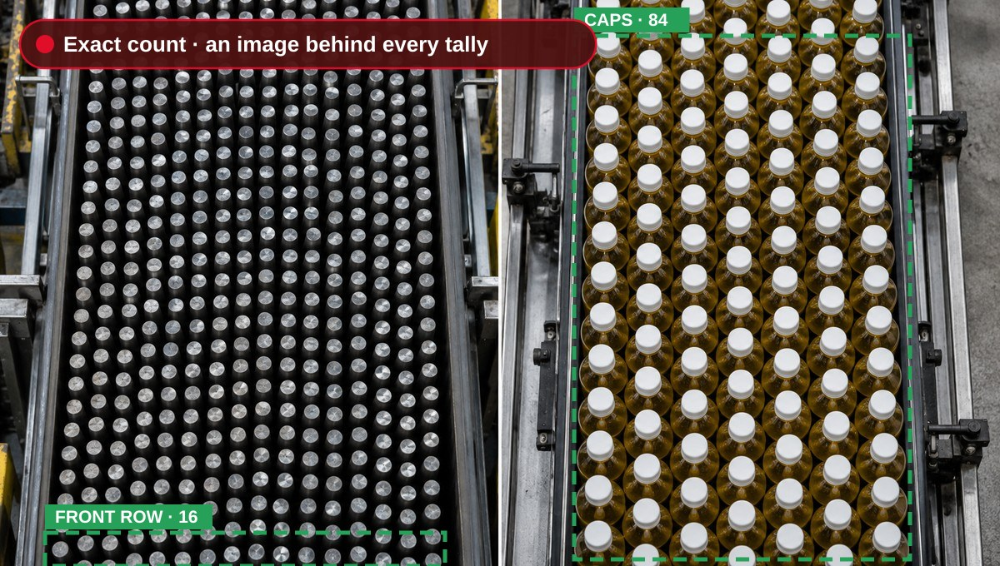
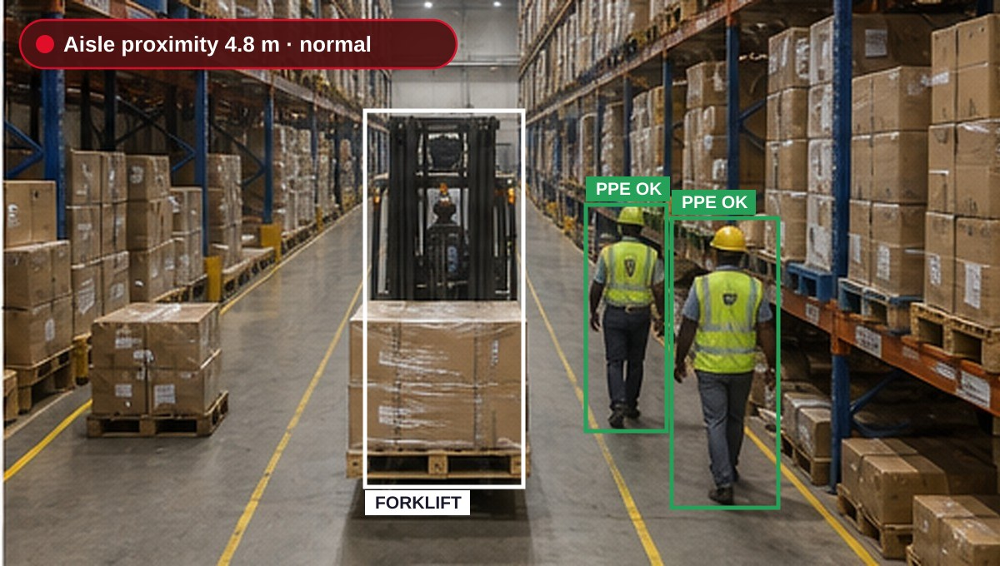
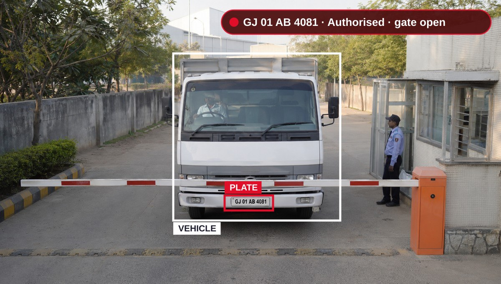

Smart Epsilon turns existing CCTV — and purpose-placed cameras exactly where you need them — into a live operational layer of your supply chain, connected to the same platform tracking every unit.

These aren't security footnotes. They are the moments a blind spot turns into a million-dollar chargeback, an investigation, or a safety audit violation.
"We found the breach four weeks after it happened. The CCTV had overwritten the footage three weeks ago."
"The customer claimed half the shipment was missing. We had two cameras pointing at the dock and neither could confirm what actually went into the truck."
"A forklift entered an active pedestrian zone at speed. We only learned about it because a worker had to jump out of the way. No one reported it."
"Carton count discrepancy at outbound took three days to reconcile with SAP. We had to physically count the entire bay twice."
Inspect how existing CCTV cameras detect operational deviations, capture high-resolution proof evidence, and trigger automated ERP and alert events in real time.

Initializing computer vision inspection parameters.
Deploying computer vision should not require rip-and-replace capital expenditure. Smart Epsilon connects directly into your existing camera streams and enterprise IT systems.
Connects seamlessly over standard RTSP, ONVIF, Hikvision, Dahua, Axis, and Milestone protocols. No proprietary camera lock-in; new units are only deployed where specific angles are required.
Performs sub-100ms inference locally on certified industrial edge gateways or high-throughput private cloud clusters with automated PII blurring and privacy masking.
Pushes verified photo evidence, SKU counts, and incident telemetry directly into SAP S/4HANA, Oracle NetSuite, Slack, Microsoft Teams, SMS, and MQTT message brokers.
From camera audit to live operational monitoring in four structured, low-risk milestones.
Map existing CCTV RTSP streams, verify frame rates, lighting conditions, and confirm operational zones without touching running production lines.
Deploy certified industrial edge nodes on-premise and configure custom detection bounding boxes, confidence thresholds, and zone triggers.
Run dual-validation with plant supervisors. Calibrate against actual ERP manifests until detection accuracy exceeds 99% benchmark.
Full 24/7 autonomous monitoring with automated daily shift reconciliation logs, exception escalation, and enterprise SLA support.
Learn how global enterprises deploy Smart Epsilon computer vision to eliminate blind spots, protect staff, and safeguard margins.
Deploying automated PPE compliance scanning and chemical spill alerts eliminated safety audit gaps across three continuous-production facilities.
An engineering overview on achieving 99.4% unit count accuracy at full conveyor line speeds with photo-stamped audit records.

Eliminating gate congestion and turnaround delays using existing boom barrier cameras synchronized with digital manifests.
Direct answers on hardware compatibility, network bandwidth, and deployment timelines.